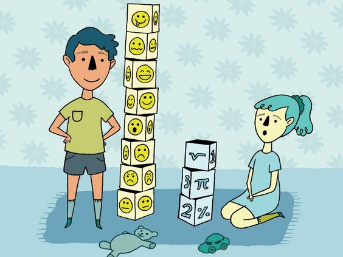

What is Emotional intelligence?
IQ VS EQ a topic debated by many
Emotional intelligence is the ability to recognise your emotions, understand what they’re telling you, and realise how your emotions affect people around you. Emotional intelligence also involves your perception of others; when you understand how they feel, this allows you to manage relationships more effectively.
Emotional intelligence has 5 categories.
Self-Awareness
Recognising your emotions and their effect
Knowing your strengths and limits
A strong sense of your self-worth
Self-Regulation
Keeping disruptive emotions and impulses in check
Maintaining standards of honesty and integrity
Taking responsibility for personal performance
Flexibility in handling change
Being comfortable with novel ideas, approaches and new information
Motivation
Striving to improve or meet a standard of excellence
Aligning with the goals of the group or organisation
Readiness to act on opportunities
Persistence in pursuing goals despite obstacles and setbacks
Empathy
Sensing others’ feelings and perspectives, taking an active interest in their concerns
Sensing others development needs and bolstering their abilities
Cultivating opportunities through different kinds of people
Reading a group’s emotional currents and power relationships
Social Skills
Wielding effective tactics for persuasion
Listening openly and sending convincing messages
Negotiating and resolving disagreements
Inspiring and guiding individuals and groups
Initiating or managing change
Nurturing instrumental relationships
Why Emotional Intelligence Is Important
IQ measures how people learn and process information whereas EQ measures how people apply emotional knowledge.
The value and benefits of emotional intelligence are great in terms of personal and professional success. It is a core competency and can add towards academic and professional success, improve relationships, and boost communication skills.